深度神经网络
Deep Neural Networks —— 互动讲义
线性回归：从房价预测开始
想象你要竞拍一套房子。中介会给出一个市场估价，但如果估价系统出错——比如某平台高估了房价——相信它的买家就要多付十万美元量级的真金白银。房价预测不是玩具问题，而是机器学习最经典的实战场景。
1.1一个简易模型
我们对房价问题做两个假设：
假设 1：找出关键影响因素——影响房价的关键因素有：卧室数目、卫浴数目和房子大小（面积），分别记为 \(x_1, x_2, x_3\)。
假设 2：售价是关键因素的加权总和——估计价格 \(\hat{y} = w_1 x_1 + w_2 x_2 + w_3 x_3 + b\)，其中权重 \(w_1, w_2, w_3\) 和偏差 \(b\) 稍后通过数据确定。权重为正表示该因素抬升房价，权重越大影响越强。
1.2线性方法就是一个单层神经网络
把上面的模型推广到 \(n\) 维输入：线性方法有 \(n\) 个权重和一个偏差，输出是输入的加权总和：
\[\mathbf{x} = [x_1, x_2, \ldots, x_n]^\top, \quad \mathbf{w} = [w_1, w_2, \ldots, w_n]^\top, \quad \hat{y} = w_1 x_1 + w_2 x_2 + \cdots + w_n x_n + b = \mathbf{w}^\top \mathbf{x} + b\]
把这个计算画成网络图，你会发现它就是一个单层神经网络：
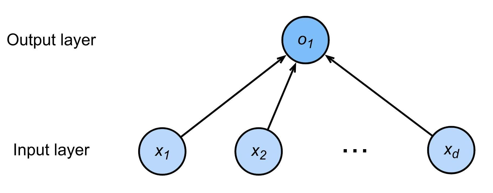
1.3训练数据
模型里的权重怎么定？靠真实数据。收集过去一段时间真实成交的房屋记录，就得到训练数据：
- 训练集（training set）：用来训练参数的数据；另有测试集（test set）用来最终评估。
- 假设训练集中有 \(m\) 个样本（sample），每个样本的真实价格 \(y\) 叫做标签（label），用来预测的因素 \(\mathbf{x}\) 叫做特征（feature）。
- 对第 \(i\) 个样本，模型的预测为 \(\hat{y}^{(i)} = w_1 x_1^{(i)} + w_2 x_2^{(i)} + \cdots + b\)。
1.4损失函数：度量"估得有多差"
比较真实值与估计值，需要一个量化指标。回归问题最常用平方损失（squared loss）：
\[\ell^{(i)}(\mathbf{w}, b) = \frac{1}{2}\left( \hat{y}^{(i)} - y^{(i)} \right)^2\]
纯粹为了求导好看：平方项求导会带出系数 2，乘上 1/2 正好抵消。它不改变最优解的位置。
1.5学习参数与封闭解
把所有样本的损失取平均，得到训练损失；学习的目标就是找到使训练损失最小的参数：
\[\ell(\mathbf{w}, b) = \frac{1}{m} \sum_{i=1}^{m} \frac{1}{2}\left( \mathbf{w}^\top \mathbf{x}^{(i)} + b - y^{(i)} \right)^2, \qquad \mathbf{w}^*, b^* = \underset{\mathbf{w}, b}{\arg\min}\; \ell(\mathbf{w}, b)\]
把偏差 \(b\) 吸收进权重向量（给每个样本追加一个恒为 1 的特征，\(\mathbf{x} \leftarrow [\mathbf{x}, 1]\)，\(\mathbf{w} \leftarrow [\mathbf{w}, b]\)），损失可写成矩阵形式 \(\ell(\mathbf{w}) = \frac{1}{2m} \| \mathbf{y} - \mathbf{X}\mathbf{w} \|^2\)。它是凸函数，令梯度为零即可解出最优解：
\[\nabla_{\mathbf{w}}\, \ell(\mathbf{w}) = \frac{1}{m}(\mathbf{X}\mathbf{w} - \mathbf{y})^\top \mathbf{X} = 0 \quad\Longleftrightarrow\quad \mathbf{w}^* = (\mathbf{X}^\top \mathbf{X})^{-1} \mathbf{X}^\top \mathbf{y}\]
这种能一步解出的封闭解（解析解）是线性回归的"特权"。深层神经网络的损失高度非凸，没有封闭解，只能依靠迭代优化——这正是下一节梯度下降登场的原因。
基础优化：梯度下降
2.1梯度下降算法
对凸的损失曲面（想象一个碗），当前位置的梯度指向"上坡最陡"的方向，那么沿着负梯度方向走一小步，损失一定下降。梯度下降把这一直觉变成迭代算法：
- 随机选择一个起点 \(\mathbf{w}_0\)；
- 重复更新：\(\mathbf{w}_t = \mathbf{w}_{t-1} - \eta \, \nabla_{\mathbf{w}}\, \ell(\mathbf{w}_{t-1})\)，其中 \(t = 1, 2, 3, \ldots\)
公式里的两个角色：
| 符号 | 含义 |
|---|---|
| 梯度 \(\nabla \ell\) | 更新权重的方向（负梯度 = 下坡方向） |
| 学习率 \(\eta\) | 一个超参数，指定每一步沿梯度方向走多远 |
用最简单的函数 \(f(w) = w^2\) 看梯度下降如何一步步逼近最优点（学习率 \(\eta = 0.2\)）：
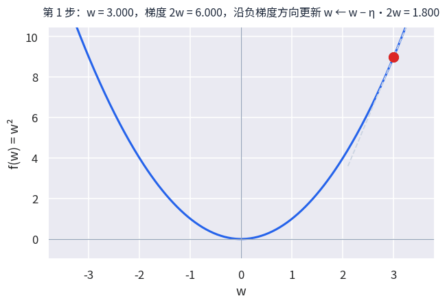
2.2选择学习率：不要太小，也不要太大
| 学习率 | 后果 |
|---|---|
| 太小 | 每次只挪一小步，收敛极慢，训练很久也到不了谷底 |
| 太大 | 一步跨过谷底，在两侧来回震荡，甚至发散（损失越来越大） |
| 合适 | 稳定下降并收敛到低点 |
学习率没有万能取值，常用经验是从 \(10^{-3}\) 附近开始尝试，观察训练损失曲线再调整。学习率是深度学习中最需要调的超参数之一。
点击"运行"开始梯度下降。
2.3小批量随机梯度下降（SGD）
梯度下降有个现实问题：每一步都要用全部训练数据计算梯度。深度网络的数据集动辄上百万样本，算一次全量梯度可能要几分钟到几小时，代价太高。解决方案是小批量随机梯度下降（mini-batch SGD）：
每步随机抽样 \(b\) 个样本 \(\mathbf{x}_1, \mathbf{x}_2, \ldots, \mathbf{x}_b\)，用它们的平均损失 \(\frac{1}{b} \sum_{i \in \mathcal{B}} \ell(\mathbf{x}_i, \mathbf{w})\) 来估计整体梯度。\(b\) 称为批量大小（batch size），是另一个重要的超参数。
2.4批量大小的选择
| 批量大小 \(b\) | 影响 |
|---|---|
| 太小（如 \(b=1\)） | 难以充分利用 GPU 并行能力；梯度噪声大，训练曲线抖动剧烈 |
| 太大（接近全量） | 浪费计算资源——当批量中的样本梯度彼此相近时，多算只是重复劳动；内存也可能放不下 |
| 常用区间 | 32 ~ 256，通常取 2 的幂（如 64、128）以适配硬件 |
梯度下降给出方向，学习率控制步长，小批量 SGD 用少量样本近似全量梯度——这三件套装在一起，就是今天训练一切深度网络的基本引擎。
softmax 回归：从回归到分类
3.1回归与分类：两类基本问题
| 任务 | 输出 | 典型例子 |
|---|---|---|
| 回归 | 估计连续值 | 房价预测、气温预测 |
| 分类 | 预测离散类别 | MNIST 手写数字分类（10 类）、ImageNet 自然物体分类（1000 类） |
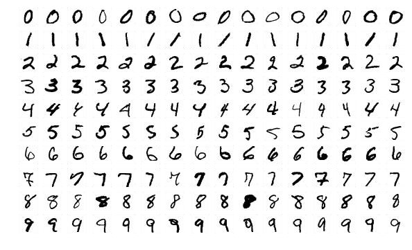

分类任务在真实世界中无处不在。竞赛平台 Kaggle 上的典型题目包括：把人类蛋白质显微镜图像分为 28 类、把恶意软件分为 9 个家族、把维基百科上的恶意评论按 toxic、obscene、insult 等多种类型打标签——它们本质上都是"输入一段数据，输出一个类别"。
3.2从单个输出到多个输出
回归只需一个连续输出；分类则需要每个类别一个置信度分数。以 4 个输入特征、3 个类别为例，给每个类别各配一套权重和偏差：
\[\begin{aligned} o_1 &= x_1 w_{11} + x_2 w_{21} + x_3 w_{31} + x_4 w_{41} + b_1 \\ o_2 &= x_1 w_{12} + x_2 w_{22} + x_3 w_{32} + x_4 w_{42} + b_2 \\ o_3 &= x_1 w_{13} + x_2 w_{23} + x_3 w_{33} + x_4 w_{43} + b_3 \end{aligned} \qquad\Longleftrightarrow\qquad \mathbf{o} = \mathbf{W}^\top \mathbf{x} + \mathbf{b}\]
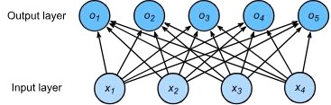
3.3softmax 函数：把分数变成概率
原始分数 \(o_i\) 可正可负、大小任意，不便解释为"置信度"。softmax 两步把它变成概率分布：
- 取指数 \(\exp(o_i)\)，保证所有值大于 0；
- 除以总和归一化，保证所有值加起来等于 1。
\[\hat{y}_i = \operatorname{softmax}(\mathbf{o})_i = \frac{\exp(o_i)}{\sum_{j=1}^{3} \exp(o_j)}\]
例：\([1, -1, 2]\) 的 softmax 结果为 \([0.26, 0.04, 0.70]\)——模型认为图像属于第 3 类的概率最高，为 70%。
3.4为什么不用平方损失？交叉熵登场
先把标签做独热编码（one-hot encoding）：真实类别为 \(i\) 时 \(\mathbf{y}\) 的第 \(i\) 位为 1、其余为 0，例如 \(\mathbf{y} = [0, 0, 1]\)。我们希望 softmax 的输出概率逼近这个分布。用平方损失行不行？
| softmax 输出 | 与 [0,0,1] 的平方损失 | 解读 |
|---|---|---|
| [0.3, 0, 0.7] | 0.18 | 预测还不错 |
| [0.17, 0.17, 0.66] | 0.173 | 预测明显更差，损失却反而更低 |
问题在于：第二个预测把 34% 的概率分散到了错误类别上，明显更差，平方损失却给出了更低的分数（0.173 < 0.18）——平方损失只关心"数值接近"，无法可靠地区分概率预测的好坏，梯度信号也弱。交叉熵（cross-entropy）才是衡量两个概率分布差异的标准工具：
\[H(\mathbf{y}, \hat{\mathbf{y}}) = -\sum_{i=1}^{q} y_i \log \hat{y}_i \qquad\xrightarrow{\;\mathbf{y}\text{ 为独热，真实类为 } i\;}\qquad H(\mathbf{y}, \hat{\mathbf{y}}) = -\log \hat{y}_i\]
对 \(n\) 个样本的训练集，总损失为 \(\ell = \frac{1}{n} \sum_{i=1}^{n} H(\mathbf{y}^{(i)}, \hat{\mathbf{y}}^{(i)})\)。
独热标签下，交叉熵退化为"\(-\log\)（真实类别的预测概率）"。预测概率越接近 1，损失越接近 0；概率越接近 0，损失趋向无穷大——它毫不留情地惩罚"自信地犯错"，梯度信号因此非常清晰。
3.5线性回归 vs softmax 回归
| 线性回归（回归问题） | softmax 回归（分类问题） | |
|---|---|---|
| 模型 | \(\hat{y} = \langle \mathbf{w}, \mathbf{x} \rangle + b\) | \(\hat{\mathbf{y}} = \operatorname{softmax}(\mathbf{W}^\top \mathbf{x} + \mathbf{b})\) |
| 参数 | \(\mathbf{w} \in \mathbb{R}^{n}\)，\(b \in \mathbb{R}\) | \(\mathbf{W} \in \mathbb{R}^{n \times q}\)，\(\mathbf{b} \in \mathbb{R}^{q}\) |
| 输出 | 单个连续值 | 各类别的概率分布 |
| 损失 | 平方损失 | 交叉熵损失 |
3.6逻辑回归：二分类的特例
逻辑回归（Logistic Regression）是 softmax 回归在二分类下的特例：用 sigmoid 函数把线性输出压缩到 \((0, 1)\) 区间，解释为"属于正类的概率"，再用交叉熵（对数损失）训练：
\[z = \mathbf{w}^\top \mathbf{x} + b, \qquad \hat{y} = \sigma(z) = \frac{1}{1 + e^{-z}}, \qquad \ell(y, \hat{y}) = -\left[ y \log \hat{y} + (1-y) \log (1 - \hat{y}) \right]\]
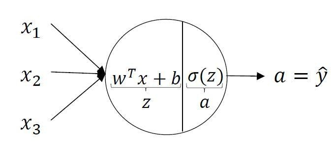
感知机与多层感知机
4.1感知机：神经网络的起点
1957 年 Rosenblatt 提出感知机（Perceptron），并在 1960 年造出硬件实现 Mark I——这是第一台能够"学习"的神经机器，曾引起巨大轰动。
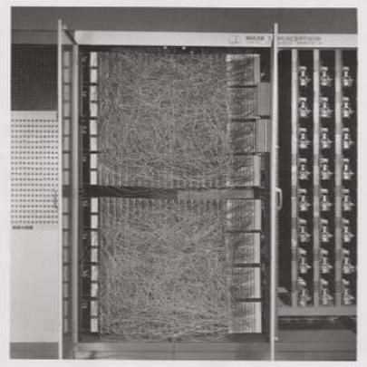
给定输入 \(\mathbf{x}\)、权重 \(\mathbf{w}\) 和偏差 \(b\)，感知机输出二分类结果：
\[\hat{y} = \sigma(\mathbf{w}^\top \mathbf{x} + b) = \begin{cases} 1 & \text{if } \mathbf{w}^\top \mathbf{x} + b > 0 \\ 0 & \text{otherwise} \end{cases}\]
训练感知机相当于对损失 \(\ell(\mathbf{w}, b) = \max(0, -y \langle \mathbf{w}, \mathbf{x} \rangle)\) 做批量为 1 的随机梯度下降：
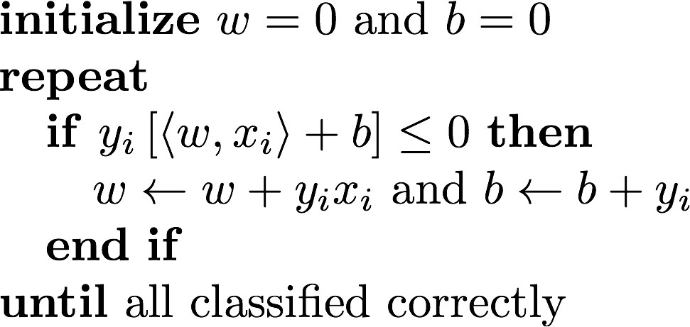
4.2XOR 问题：感知机的阿喀琉斯之踵
1969 年，Minsky 与 Papert 在《Perceptrons》一书中指出：感知机无法学习 XOR（异或）问题。原因很根本——单个感知机只能画出一条直线（线性分离器）来分割两类样本，而 XOR 的四个样本点（分属两类）根本不存在这样的直线。
| \(x_1\) | \(x_2\) | XOR 输出 | 能否线性分割 |
|---|---|---|---|
| + | + | − | 否——同类点分布在对角线上，任何直线都无法把 + 与 − 完全分开 |
| + | − | + | |
| − | + | + | |
| − | − | − |
XOR 问题的证明沉重打击了第一代神经网络研究，是 1970~80 年代"AI 寒冬"的成因之一。破解之道正是给网络加隐藏层。
4.3多层感知机：加一层就能学 XOR
XOR 可以分解为简单逻辑运算的组合：\(y = (x_1\ \text{AND}\ (\text{NOT}\ x_2))\ \text{OR}\ ((\text{NOT}\ x_1)\ \text{AND}\ x_2)\)。每个 NOT / AND / OR 都可以由一个感知机实现——把几个感知机分层连接，让第一层的输出作为第二层的输入，XOR 就迎刃而解。这就是多层感知机（MLP, Multi-Layer Perceptron）的思想来源。
4.4单隐藏层网络
在输入与输出之间插入一个含 \(m\) 个神经元的隐藏层（隐藏层大小 \(m\) 是一个超参数）：
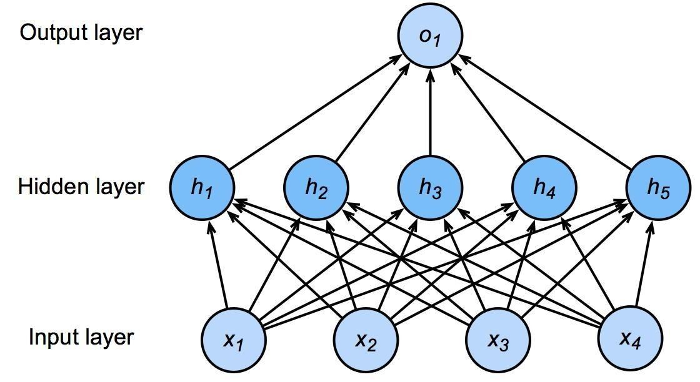
数学上，整个网络是三步复合：
\[\text{输入：} \mathbf{x} \in \mathbb{R}^{n} \qquad \text{隐藏层：} \mathbf{h} = \sigma(\mathbf{W}_1^\top \mathbf{x} + \mathbf{b}_1) \qquad \text{输出：} \hat{y} = \mathbf{w}_2^\top \mathbf{h} + b_2\]
其中 \(\sigma\) 是一个逐元素作用的激活函数。
4.5为什么必须是非线性激活函数？
假如 \(\sigma\) 是线性（恒等）函数，那么：
\[\hat{y} = \mathbf{w}_2^\top (\mathbf{W}_1^\top \mathbf{x} + \mathbf{b}_1) + b_2 = (\mathbf{W}_1 \mathbf{w}_2)^\top \mathbf{x} + (\mathbf{w}_2^\top \mathbf{b}_1 + b_2) = \mathbf{w}'^\top \mathbf{x} + b'\]
两个线性层复合后仍然是一个线性模型——隐藏层白加了，网络依旧画不出折线、学不会 XOR。只有插入非线性激活函数，堆叠多层才有意义，网络才获得逼近任意复杂函数的能力（万能逼近定理）。
4.6常用激活函数
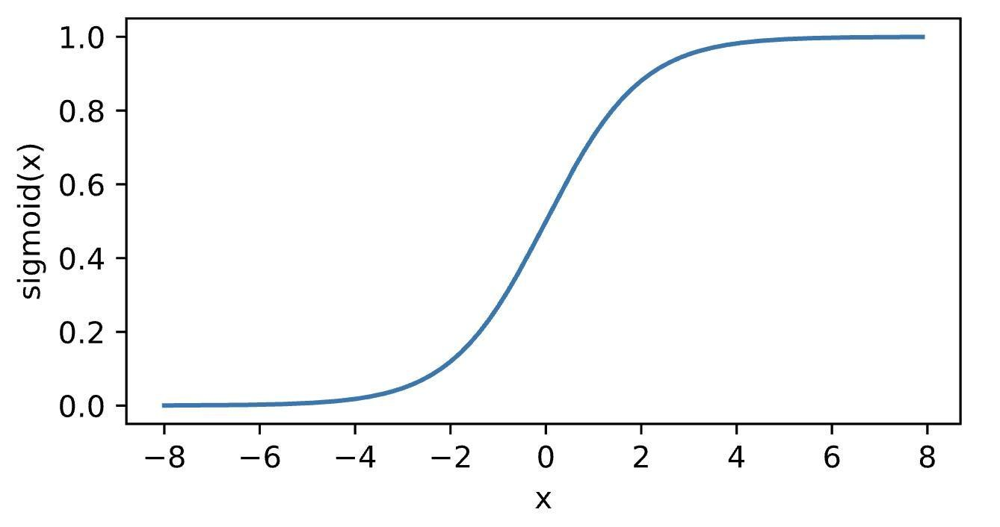
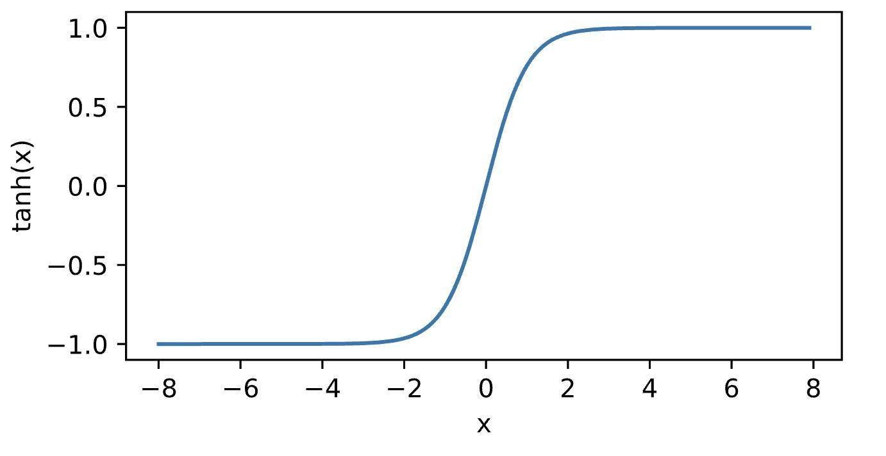
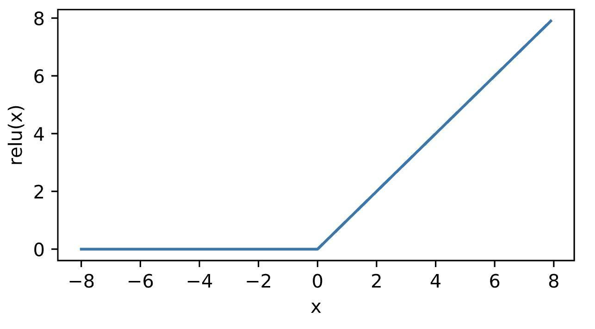
4.7多类别与多隐藏层
把输出层扩展为 \(q\) 个单元并套上 softmax，就得到多类别分类网络：\(\hat{\mathbf{y}} = \operatorname{softmax}(\mathbf{W}_2^\top \mathbf{h} + \mathbf{b}_2)\)。继续堆叠隐藏层，就得到深层的 MLP：
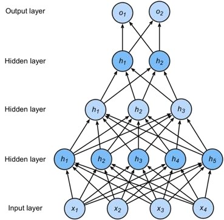
单层网络只能线性分割；隐藏层 + 非线性激活让网络可以表达任意复杂的决策边界。深度网络的表达能力，正是从这一简单的堆叠中生长出来的。
模型选择与泛化
5.1训练误差与泛化误差
评估模型要看两种误差：
| 误差 | 含义 |
|---|---|
| 训练误差 | 模型在训练数据上的误差 |
| 泛化误差 | 模型在从未见过的新数据上的误差——这才是我们真正关心的 |
用历年考试真题备考：真题全对（训练误差低）不代表未来的考试能考好（泛化误差低）。学生 A 靠死记硬背让真题零错误；学生 B 真正理解知识、能解释答案。谁更可能在未来的考试中胜出？机器学习也一样——我们追求的不是记住训练集，而是泛化到新数据。
5.2验证集与测试集：分工明确
| 数据集 | 用途 | 纪律 |
|---|---|---|
| 验证集 | 训练过程中评估模型、选择超参数（例如从训练数据中留出 50%） | 绝不能与训练数据混在一起——这是新手最常犯的错误（没有之一） |
| 测试集 | 模拟"未来的考试"，原则上只使用一次 | 例如 Kaggle 私人排行榜的数据；反复用测试集调参会让它"泄题"，评估失去意义 |
5.3K 折交叉验证
数据不够多、舍不得单独划出验证集时，使用 K 折交叉验证（K-fold cross validation）：
- 把训练数据平均划分为 \(K\) 个部分；
- 循环 \(i = 1, \ldots, K\)：用第 \(i\) 部分做验证集，其余 \(K-1\) 部分做训练集；
- 报告 \(K\) 次验证误差的平均值作为模型性能的估计。
K 的常见取值为 5 或 10。K 越大估计越准，但训练次数也越多。
5.4欠拟合与过拟合
同一批数据点，用三种不同复杂度的模型去拟合，效果天差地别：
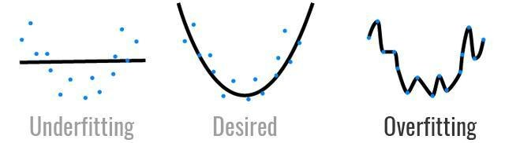
把模型复杂度与数据复杂度放在一起看：
| 数据复杂度低 | 数据复杂度高 | |
|---|---|---|
| 模型复杂度低 | 正常 | 欠拟合 |
| 模型复杂度高 | 过拟合 | 正常 |
过拟合和欠拟合都不是绝对的，而是"模型能力"与"数据难度"相对不匹配的结果。同一个模型，放在简单数据上可能过拟合，放在复杂数据上可能刚刚好。
5.5偏差与方差、模型复杂度的估计
欠拟合与过拟合还有一对更专业的名字——高偏差（high bias）与高方差（high variance）。用分类问题的决策边界来看最直观：
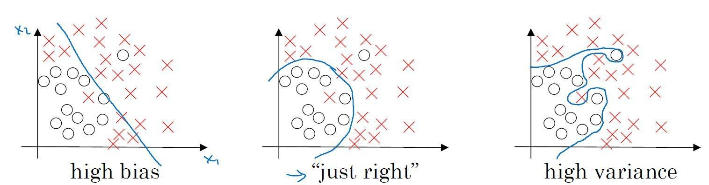
模型复杂度（容量）指模型"适应不同数据分布"的能力：低容量模型连训练集都拟合不了（欠拟合）；高容量模型可以把训练集整个背下来（过拟合）。不同算法之间很难比较复杂度（比如决策树 vs 神经网络），但同一算法族内有两个主要因素：
- 参数个数：如单层网络的 \((n+1)m\)（输入层到隐藏层）\(+ (m+1)k\)（隐藏层到输出层）个参数；
- 每个参数取值的范围：允许取值越大，容量越大——这正是权重衰减要限制的东西。
数据复杂度则取决于：样本数量、每个样本的元素个数、时间与空间结构、类别多样性等。数据越复杂，就需要越大的模型来匹配。
正则化：权重衰减与丢弃法
6.1权重衰减：给参数加上"软约束"
既然参数取值范围越大、模型容量越大，那么限制参数大小就能压制过拟合。最直接的写法是硬约束：
\[\min_{\mathbf{w}}\; \ell(\mathbf{w}, b) \quad \text{subject to } \|\mathbf{w}\|^2 \le \theta\]
实践中通常把它改写成等价的软约束（拉格朗日形式），即在损失后追加一个正则项：
\[\min_{\mathbf{w}}\; \ell(\mathbf{w}, b) + \frac{\lambda}{2} \|\mathbf{w}\|^2 \qquad \underbrace{\tilde{\ell}(\mathbf{w}, b) = \ell(\mathbf{w}, b) + \frac{\lambda}{2}\|\mathbf{w}\|^2}_{\text{目标函数 = 原损失 + 正则化项}}\]
| 要点 | 说明 |
|---|---|
| 超参数 \(\lambda\) | 控制正则化的强度：\(\lambda = 0\) 无效果；\(\lambda \to \infty\) 时最优解 \(\mathbf{w}^* \to \mathbf{0}\) |
| 偏差 \(b\) | 通常不加惩罚；加不加在实践中几乎没有区别 |
| 别名 | 对向量是 \(L^2\) 范数正则化；对权重矩阵则是 Frobenius 范数正则化 |
对带正则项的目标函数求梯度并代入梯度下降，更新规则变为：
\[\mathbf{w}_{t+1} = (1 - \eta\lambda)\, \mathbf{w}_t - \eta\, \nabla_{\mathbf{w}}\, \ell(\mathbf{w}_t, b)\]
通常 \(\eta\lambda < 1\)，于是每步更新前权重先乘上一个小于 1 的系数——权重在每一步都被按比例缩小，这就是"衰减"（weight decay）名字的由来。
6.2丢弃法（dropout）：把噪声注入隐藏层
正则化的另一个思路来自"稳健性"：一个好模型在输入发生适度扰动时，输出应该保持稳定。理论表明，给输入加噪声训练等价于 Tikhonov 正则化。丢弃法更进一步——把噪声直接注入内部隐藏层：
训练时的 dropout：以概率 \(p\) 把隐藏层的某些神经元输出随机置 0，其余神经元的输出除以 \((1-p)\) 放大，保证加噪后的期望不变（"没有偏差的噪音"）：\(E[h'] = h\)。这样任何神经元都不能依赖某个特定同伴的存在，网络被迫学到更冗余、更稳健的表示。通常用在全连接层的输出上。
推断（预测）时的 dropout：正则化只在训练时使用。推断阶段关闭 dropout，直接使用完整的确定性网络 \(h' = \operatorname{dropout}(h)\)（恒等输出），保证结果是确定的、可复现的。
权重衰减从"参数大小"上压缩模型容量，dropout 从"网络结构"上随机扰动增强稳健性——两者都是对抗过拟合的常用武器，经常同时使用。
正反向传播与数值稳定性
7.1用计算图看清一次完整的训练
第 02 讲介绍的计算图，是理解正向/反向传播的最佳工具。先看一个简单例子 \(f(x, y, z) = (x + y)\,z\)，取 \(x = -2\)、\(y = 5\)、\(z = -4\)：
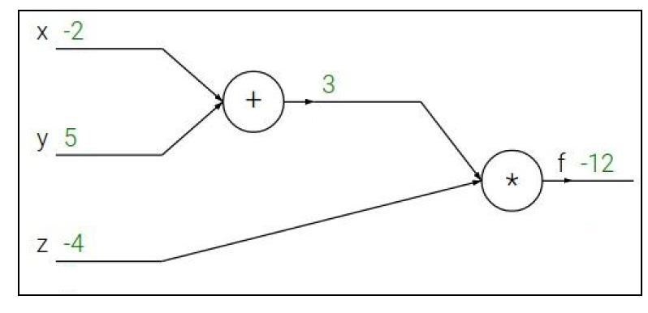
真实的神经网络也是同一套路，只是图更大。下图是一个含 sigmoid 门的小型网络 \(f(w, x) = \dfrac{1}{1 + e^{-(w_0 x_0 + w_1 x_1 + w_2)}}\) 的完整计算图：
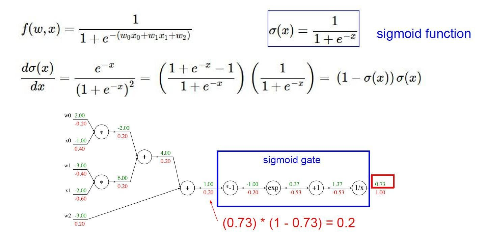
7.2层视角的前向与反向传播
把粒度从"单个算子"提升到"整个层"，一个 \(L\) 层网络的训练可以概括为：
| 阶段 | 输入 → 输出 | 缓存/传递内容 |
|---|---|---|
| 前向传播 | 第 \(t\) 层：输入 \(\mathbf{h}^{t-1}\) → 输出 \(\mathbf{h}^{t}\) | 缓存每层的中间量 \(\mathbf{z}^{t}\)（反向时要用） |
| 反向传播 | 第 \(t\) 层：输入 \(\partial \ell / \partial \mathbf{h}^{t}\) → 输出 \(\partial \ell / \partial \mathbf{h}^{t-1}\) 与 \(\partial \ell / \partial \mathbf{W}^{t}\) | 沿层逆向传递梯度，逐层求出参数梯度 |
7.3深度网络的两个数值问题：梯度爆炸与梯度消失
考虑一个 \(d\) 层的网络 \(\mathbf{h}^{d} = \ell \circ f^{d} \circ \cdots \circ f^{1}(\mathbf{x})\)，损失对第 \(t\) 层输出的梯度为：
\[\frac{\partial \ell}{\partial \mathbf{h}^{t}} = \frac{\partial \ell}{\partial \mathbf{h}^{d}} \cdot \underbrace{\frac{\partial \mathbf{h}^{d}}{\partial \mathbf{h}^{d-1}} \cdots \frac{\partial \mathbf{h}^{t+1}}{\partial \mathbf{h}^{t}}}_{\text{\(d-t\) 个矩阵连乘}}\]
问题就出在这串连乘上。若每个因子略大于 1，\(d-t\) 次连乘会爆炸；略小于 1，则会消失：
| 问题 | 数值示例 | 后果 |
|---|---|---|
| 梯度爆炸 | \(1.5^{100} \approx 4 \times 10^{17}\) | 梯度变成天文数字，参数更新失控、训练发散 |
| 梯度消失 | \(0.8^{100} \approx 2 \times 10^{-10}\) | 梯度趋近 0，底层参数几乎不更新 |
梯度消失最典型的元凶是 sigmoid 激活函数：
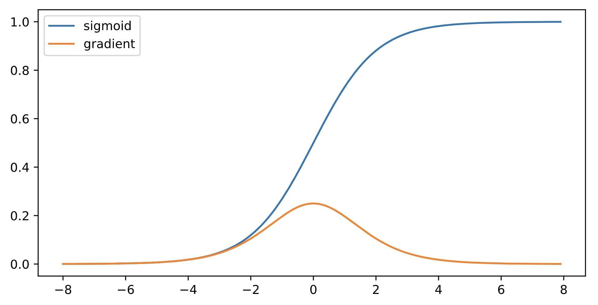
16 位浮点下，梯度小于 \(2^{-24} \approx 5.96 \times 10^{-8}\) 就等于 0。此时无论怎么调学习率，底层训练基本无效，只有顶层在学习——网络"更深"反而可能更差。
7.4稳定训练的对策与 Xavier 初始化
目标是让梯度值保持在合适的范围（例如 \([10^{-6}, 10^{3}]\) 之间），主要手段有三类：
- 改变网络结构：把"乘法路径"变"加法路径"——ResNet 的残差连接、LSTM 的门控结构都是这个思路；
- 归一化：批量归一化（BatchNorm）、梯度修剪（gradient clipping）；
- 合理的权重初始化 + 激活函数搭配。
第三点里最经典的是 Xavier 初始化。对加权和 \(z = w_1 x_1 + w_2 x_2 + \cdots + w_n x_n\)，若想让输出的方差与输入一致（不放大也不缩小），权重应从均值为 0、方差为 \(\frac{1}{n_{t-1}}\) 的分布中采样（\(n_{t-1}\) 为输入维度）：
| 激活函数 | 推荐初始化方差 |
|---|---|
| tanh | \(\frac{1}{n_{t-1}}\)（Xavier 原始形式） |
| ReLU | \(\frac{2}{n_{t-1}}\)（He 初始化，ReLU 会砍掉一半信号，方差加倍补偿） |
| 其他/通用 | \(\frac{2}{n_{t-1} + n_{t}}\)（兼顾前向与反向的折中） |
综合案例与本讲小结
8.1综合案例：用两隐藏层网络识别 MNIST 手写数字
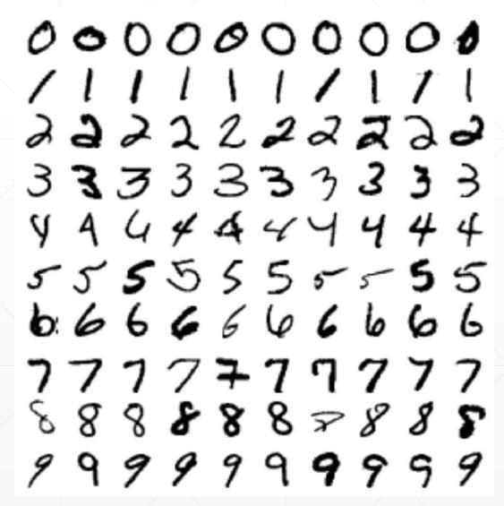
把本讲的所有零件组装起来：
| 组件 | 本案例中的选择 |
|---|---|
| 输入 | 图像展平为 \(\mathbf{X} = [x_1, x_2, \ldots, x_{784}]\)（28 × 28 = 784 维） |
| 网络结构 | \(\mathbf{h}_1 = \max(\mathbf{X}\mathbf{W}_1 + \mathbf{b}_1, 0)\)，\(\mathbf{h}_2 = \max(\mathbf{h}_1\mathbf{W}_2 + \mathbf{b}_2, 0)\)，\(\mathbf{h}_3 = \mathbf{h}_2\mathbf{W}_3 + \mathbf{b}_3\)——两个 ReLU 隐藏层 + 线性输出层 |
| 输出与类别 | 10 维输出经 softmax 得概率，\(\hat{y} = \arg\max\)，类别 \(Y \in \{0, 1, \ldots, 9\}\) |
| 损失函数 | 交叉熵 \(\operatorname{loss} = -\log(\text{真实类别的 softmax 概率})\) |
| 优化器 | 小批量随机梯度下降（SGD） |
这个完整案例将在下次实验课上动手实现——从加载数据、搭建网络到训练评估，全程使用 PyTorch。
8.2知识要点回顾
| 主题 | 必须掌握的内容 |
|---|---|
| 线性回归 | 模型 \(\hat{y} = \mathbf{w}^\top\mathbf{x} + b\)；平方损失；封闭解 \((\mathbf{X}^\top\mathbf{X})^{-1}\mathbf{X}^\top\mathbf{y}\) |
| 优化 | 梯度下降公式；学习率与批量大小的权衡；小批量 SGD |
| softmax 回归 | softmax 归一化；独热编码；交叉熵为何优于平方损失；逻辑回归是二分类特例 |
| MLP | XOR 问题；隐藏层 + 非线性激活的必要性；sigmoid / tanh / ReLU 的特点 |
| 模型选择 | 训练误差 vs 泛化误差；验证集纪律；K 折交叉验证；欠拟合/过拟合与模型复杂度 |
| 正则化 | 权重衰减的软约束形式与更新规则；dropout 训练开、推断关 |
| 数值稳定性 | 梯度爆炸/消失的成因（矩阵连乘）；sigmoid 导数 ≤ 0.25；Xavier/He 初始化 |
8.3课堂自测
8.4下讲预告
第 04 讲：卷积神经网络（CNN）（理论 2 学时）——为什么全连接网络处理图像会参数爆炸？卷积运算、填充与步幅、多通道、池化层如何让图像识别脱胎换骨。请先复习本讲的隐藏层与反向传播。